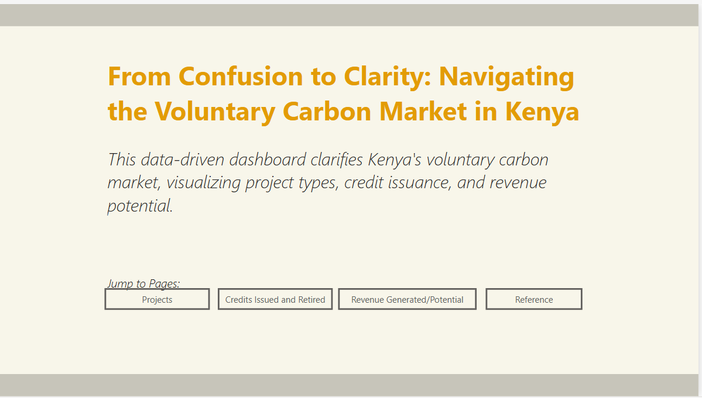
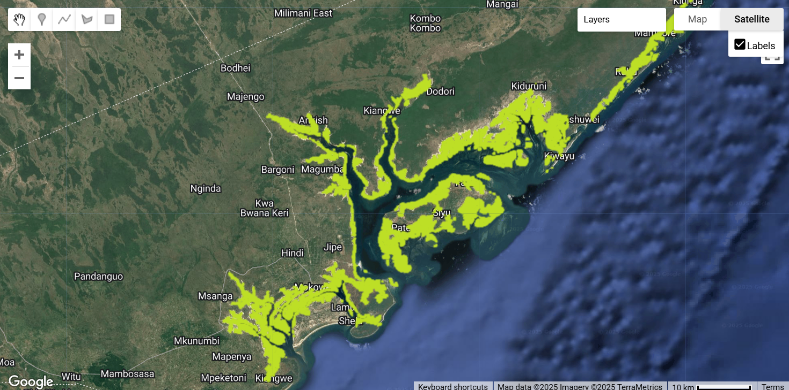
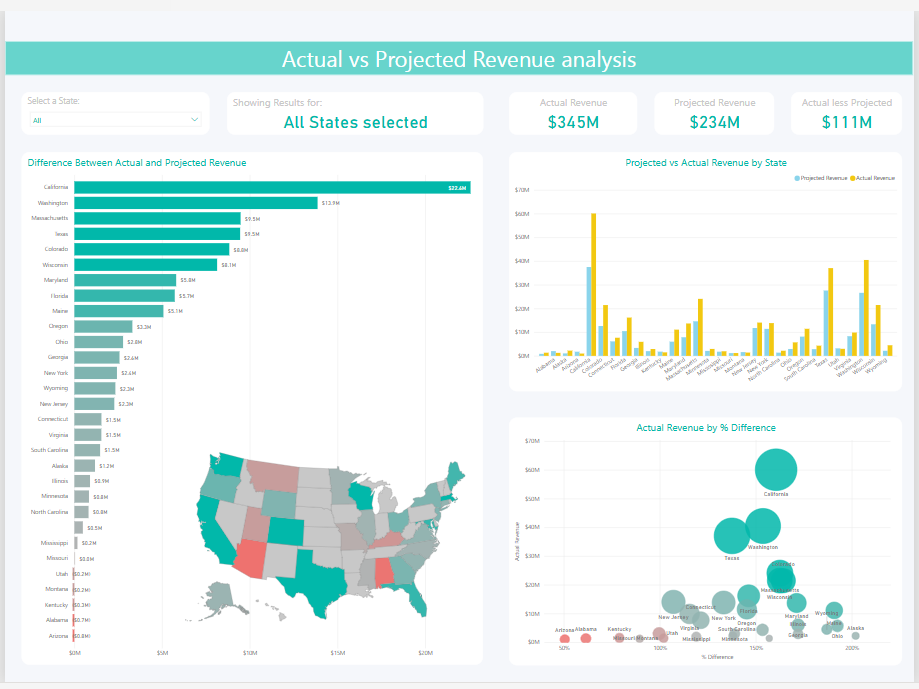
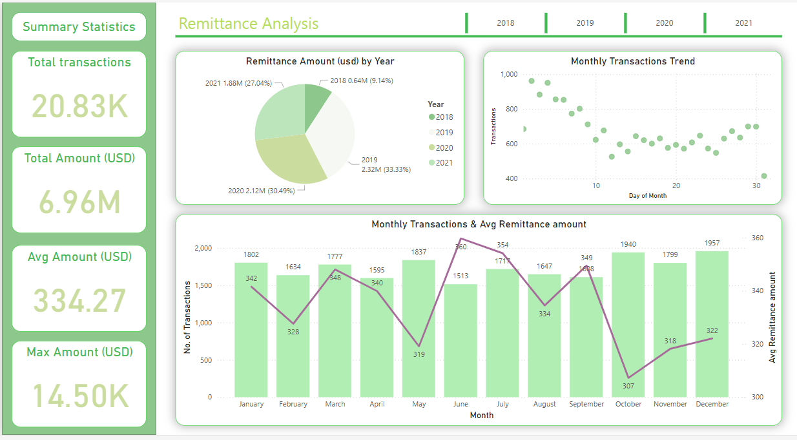

This Power BI dashboard highlights key data metrics in the voluntary carbon market (VCM). It extracts and consolidates data from leading carbon standards (Verra’s VCS and the Gold Standard’s), providing an interactive and transparent view of VCM projects in Kenya.

This Tableau dashboard analyzes electricity generation trends across Europe in 2021, highlighting the contrasts between renewables, nuclear, and fossil fuels. With interactive charts, users can explore the regional energy mix and gain insights into power generation patterns.

This Google Earth Engine app visualizes mangrove coverage in Kenya, highlighting gains, losses, and overall changes over time. It provides an interactive spatial analysis of mangrove ecosystems, supporting conservation efforts with data-driven insights.

This Power BI dashboard visualizes actual vs. projected revenue across U.S. states, providing insights into financial performance and regional trends. It features an interactive choropleth map, allowing users to explore revenue distribution and compare projections with real-world outcomes.

This dashboard compares the Profit & Sales by subcategory and region. It also calculates the difference in Profit & sales between each subcategory.

This Power BI dashboard provides an in-depth analysis of a remittance agency, offering insights into transaction trends, customer behavior, and regional remittance flows. It enables data-driven decision-making by visualizing key performance metrics in an interactive format.

A simple dashboard highlighting the perfomance of Arsenal over the last 10yrs.

The dashboard shows key metrics of the coronavirus pandemic across continents and countries on AUG 2021